This is the page where you can follow instructions on how to use the Map Editor.
If you encounter glitches or other problems in the Map Editor, some of your answers can be found in the Q&A Page.

This is the page where you can follow instructions on how to use the Map Editor.
If you encounter glitches or other problems in the Map Editor, some of your answers can be found in the Q&A Page.
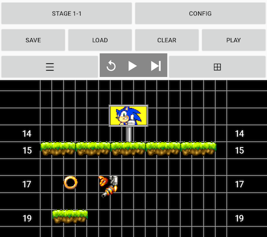
The Map Editor is a feature that allows you to check the different game maps and even modify them to test them out!
When entering the Map Editor, you will see the top layout of the first stage.
You can slide around on the stage map to move in all directions. You can also slide both fingers vertically in opposite directions to zoom in and out the stage map.
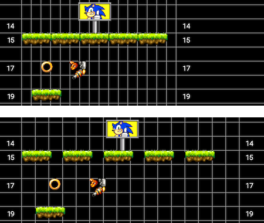
If you slide both fingers horizontally in opposite directions, you can change the width of the grid boxes. This is useful in case you have trouble selecting a box.
At the top of the screen is a selection of menus and options. You can find the different usage of each option by checking the different sections of this page.
If you want to get a higher view of the canvas, you can hide the menu section by pressing the ☰ icon. Press this icon again to display the menu section back.
The music controls let you listen to music to give an ambient while using the Map Editor. You can play, pause and replay the music. The NEXT button lets you choose another of 3 ambient music tracks.
You can also use the music controls when using a custom music. Press the NEXT button to bring back the ambient music playlist.
In the Map Editor, the stage layouts are represented by objects. The objects are represented by sprites positioned closely to how the stages look like in action.
Each object is placed in different X and Y coordinates. The X position can go from between 0 to 15 from left to right, whereas the Y position can go from from 0 to 65535 from top to bottom.
You can see the Y position numbers on each side of the stage map. The Y position numbers are only visible when at least one object is present on that Y position.
When selecting an empty space, you will be granted with a list of object types. You can also select a placed object to change its type or remove it.
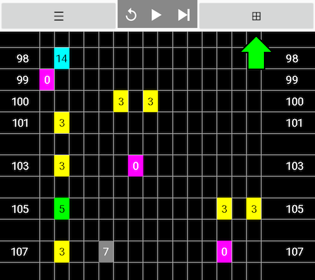
You can check the ID box of each object by pressing the ⊞ icon. The sprites will turn into small colored rectangles with their type ID on them. You can press the ⊞ icon again to display the sprites back.
This option allows you to easily identify the precise object locations in case you want to remove or change the objects.
Here is the list of ID and color of each object:
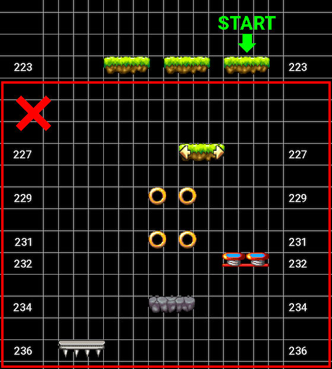
The starting point of the stage is determined by the lowest basic platform placed (ID 0). Any other objects placed below won't be present in the stage.
If you place multiple basic platforms at the lowest, the starting point will be set to the platform placed to the rightmost. There is no other way to change the starting point position.
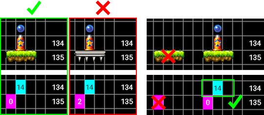
Checkpoints must be placed in a specific way to work correctly. Here are the instructions on how to use them:
The ID 8 object type is necessary to clear a stage. It serves multiple purpose depending on the stage.
In ACT 1 and 2 stages, the ID 8 object type is the Goal Post and it represents the end of the stage. Reach the height of the Goal Post to clear the stage.
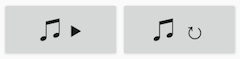
In ACT 3 stages, the ID 8 object type is the Boss transition. When reaching the height of the Boss transition, the playable character is ascending until a certain height.
The Boss transition is necessary to make Dr. Eggman appear. Dr. Eggman is located at the highest position of the stage. He must be defeated to clear the stage.
You can add multiple Boss transitions to make you ascend even more, but doing so will make Dr. Eggman behave faster each time.
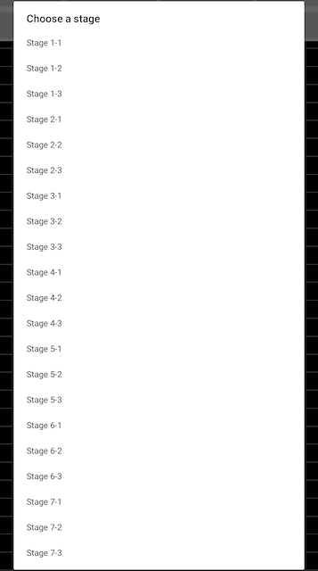
Press the stage number button to access the stage select menu.
There are 21 stages in total in the game to check and modify. You can see the stage number on the button, but the stages are also recognizable by the sprites on the map. The left and right numbers correspond to the zone number and act number respectively.
Here are the zones that the stages represent:
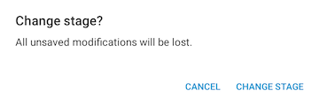
If you have modified the stage map layout (by adding, editing or removing an object) without saving before entering the stage select menu, a message shows up to warn you that all unsaved modifications will be lost once you are changing a stage map.
When pressing the SAVE option for the first time, you have to select a folder to determine the SonicJump subfolder directory, where your modified map files will be saved.
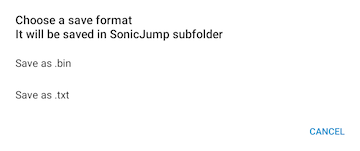
After selecting a folder directory, pressing SAVE will ask you save your map as a .bin (map.bin) or .txt file (decoded_map.txt).
The map files don't overwrite, so anytime you save a map file, it creates another one. So make sure to track down your progress.
Anytime you enter the Map Editor, it loads the regular game map by default. If you want to check your map, you have to load it.
To load your progress, press the LOAD option and search for a map.bin or decoded_map.txt file located in the SonicJump subfolder. This folder is most likely located in the ⤓ DOWNLOAD folder of your internal device.
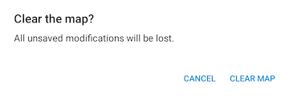
The CLEAR option allows you to clear the stage layout.
If you clear a map, all unsaved stage layout modifications will be lost.
You can bring the original stage layout back by selecting the same stage map in the stage select menu.
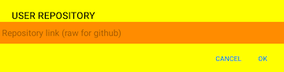
After loading or saving your map, you can play and test it by pressing the PLAY option. This option will bring you to the Stage Select menu of the game.
Select the corresponding stage to play your modified stage.
For example: if you have made your own stage in Stage 1-1, you have to select the first stage of the game to play it.
You can't play a stage map without saving or loading a map first. Otherwise, a message pops up stating that you need to save or load your map file before playing.
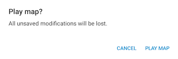
If you have modified the stage map layout (by adding, editing or removing an object) without saving before playing the map, a message shows up to warn you that all unsaved modifications will be lost once you are entering this option.
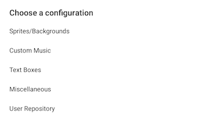
The CONFIG menu is where you can change the different settings for your map. This menu contains 5 different menus that you can find their usage in this section.
If you have confirmed settings in the different menus, you can check your previous configured settings by going back to the menus. Your configured settings are preserved for each stage.
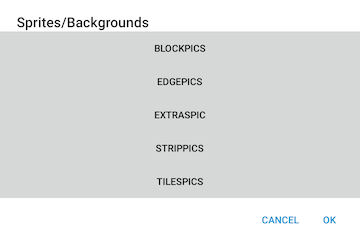
The Sprites/Backgrounds menu lets you change the sprites and backgrounds of the stage.
Select an option to display a sub-menu containing different sprite sheets located in the corresponded folder name in the assets folder of the source code. Once selecting a sprite sheet, its name will display on the selected option.
Here are the different settings available:
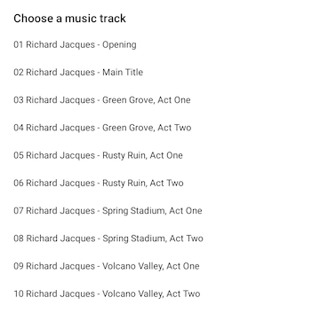
The Custom Music menu contains a library of music tracks. In this menu, you can change the music of the stage, as well as listening to the different available music while using the Map Editor.
In this menu, select an album first and then a music track. Doing so will make the selected music played in the background. You can use the music controls to play, pause and replay the selected music. Pressing the NEXT button brings back the ambient music playlist.
To use a custom music for your map, select a music track first and then check the Custom Music option in the Miscellaneous menu.
DISCLAIMERS:
The music track menu may not be accessible or the music may not load, due to the music being stored in archive.org libraries.
Additionally, if an album doesn't load correctly, this might create inconsistencies in the album selection.
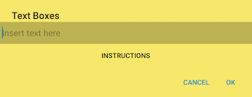
The Text Boxes menu lets you add text boxes in the stage. The text boxes are initially used to display the tutorial texts while playing as Sonic in GREEN HILL ZONE ACT 1.
Insert text and a stage Y position number to display a text box.
They must be separated by |.
For example: TEXT1|194|TEXT2|178|TEXT3|156|TEXT4|132
You can check the platforms on the map and the stage Y position on each side of the map to give you a better idea on where to place the text box appearances.
If you are using lowercase letters or certain special characters, it is recommended to set the FONTS option to DEFAULT in the GRAPHIC STYLES menu.
If you don't remember the instructions, you can read them by pressing the INSTRUCTIONS button to give you a reminder.
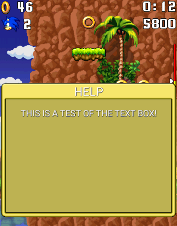
Once done correctly, reach the stage height position based on the Y position number to display a text box.
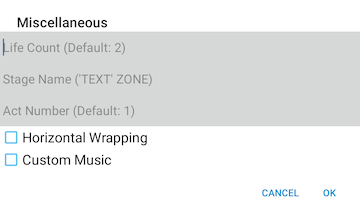
The Miscellaneous menu lets you change various settings of the stage.
Here are the different settings available:
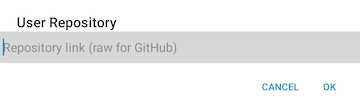
The User Repository option is used to read the config.ini file from the user repository, which contains the name of the user textures and graphics for the maps.
Insert the repository link and the Map Editor will load the custom graphics.